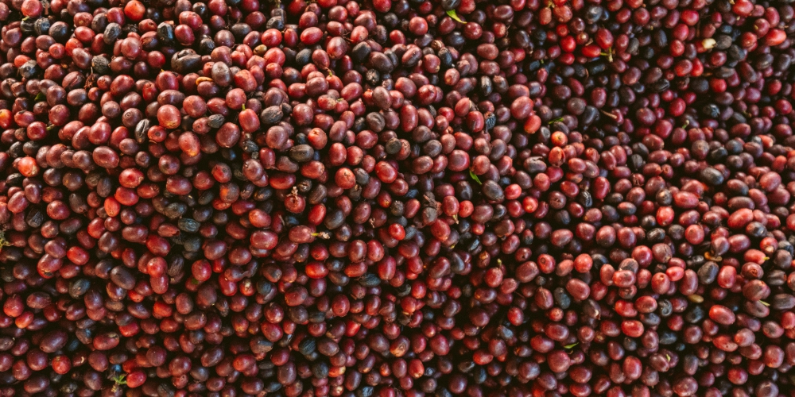
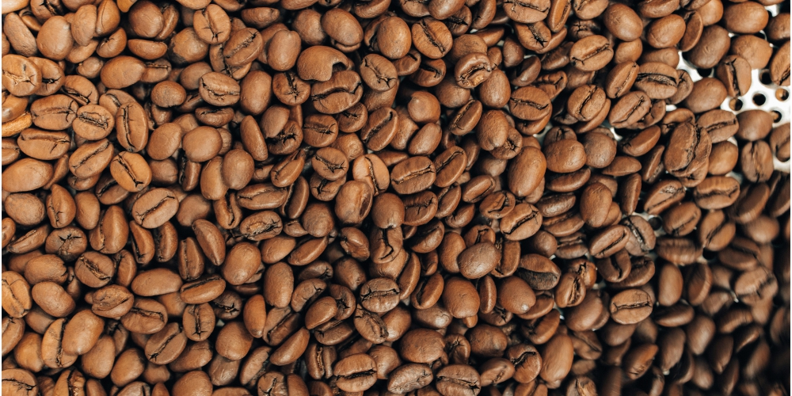
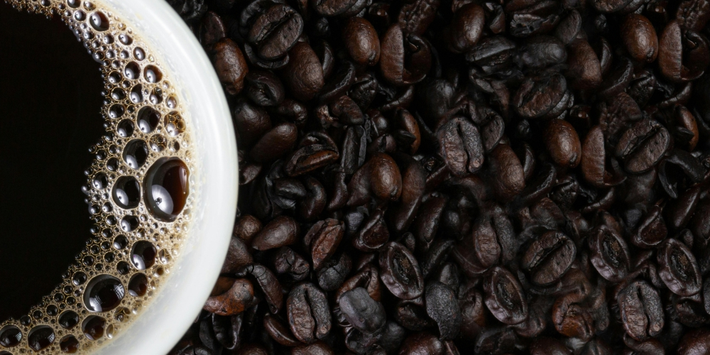

Descubre el sabor autentico de nuestro café, cultivado con pasión y dedicación en nuestros cafetales. Cada taza es una experiencia única que te hará sentir el calor y la riqueza de nuestra tierra.

La cosecha de café, un proceso crucial en la producción de esta bebida. Los granos de café se recolectan a mano, uno a uno, seleccionando solo los que están maduros y dejando en el cafeto los que aún no están a punto. Este método se utiliza en zonas con clima variable, donde la maduración no es homogénea, y en zonas de difícil acceso.

El tostado de café es un proceso clave para obtener el sabor y aroma característicos de esta bebida. Consiste en calentar los granos de café verde a altas temperaturas para que se produzcan reacciones químicas que transformen el grano y desarrollen los sabores y aromas deseados.

La molienda del café es el proceso de transformar los granos de café tostados en polvo, adecuado para la preparación de bebidas. El tamaño de la molienda (gruesa, media o fina) afecta significativamente el sabor y la extracción del café, dependiendo del método de preparación utilizado.
"Un lugar donde la pasión y la dedicación se unen para crear el café perfecto"
Ave. Ahuehuetitla, col. Los cantores No. 2.
Es una de las bebidas más consumidas en el mundo, omnipresente en nuestro país. Sin el café no se entienden desayunos ni sobremesas. Pero además de ser una de las bebidas más consumidas en el mundo, el origen del café es una historia llena de curiosidades. .
Los granos de café proceden del cafeto, una planta parecida a un arbusto que puede llegar a ser muy alta (los caficultores la mantienen recortada a unos 1,5 metros para que sea más manejable). En estas plantas de café crecen racimos de bayas y es en su interior donde encontramos dos granos de café. Por término medio, el cafeto tarda un año en empezar a producir flores blancas y fragantes, y empieza a dar frutos pasados unos cuatro años. Sin embargo, hay que esperar unos 10 años para que estas plantas empiecen a producir granos de café a nivel comercial, que son los de mayor valor para los agricultores. La vida útil del cafeto oscila entre los 30 y los 40 años, pero puede vivir mucho más tiempo dependiendo de los cuidados que se le den.